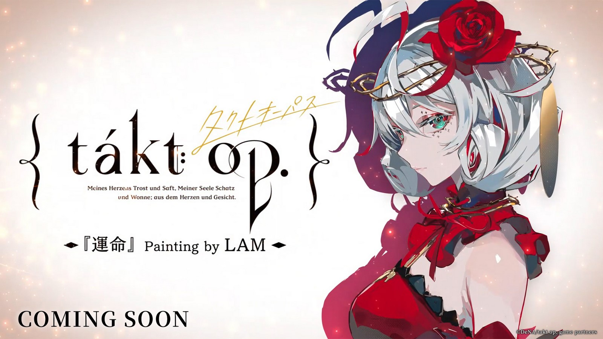
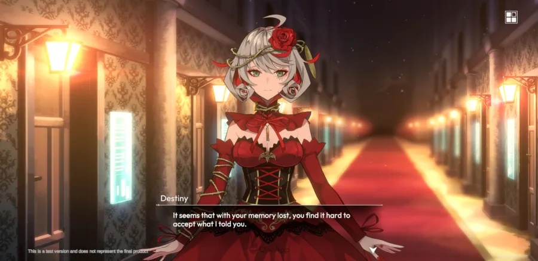
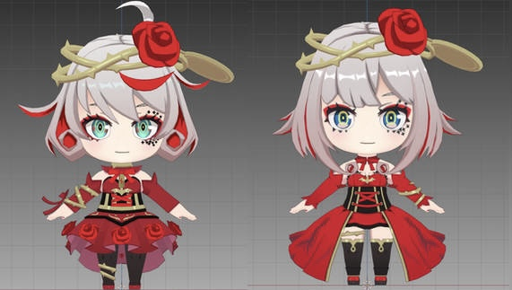

Takt Op. Symphonica is a RPG, turn-based game developed by DeNA and Bandai Namco Arts. The game is relatively new as it was launched in 2023. As of now DeNA has continued to release new characters and with the help of the artist LAM, continued to deliver amazing game visuals. However, some players find the game a bit boring. Even though the art is great, the gameplay gets repetitive because every battle has the same mechanics and there's nothing new besides stronger enemies.
Its good, visuals and soundtracks are good and characters look great.
Story is pretty good too. Although I get bored of the gameplay. Its
just not enough for me to get hooked in. It feels kinda slow for me,
and thats coming from someone who plays turn based games on the daily.
Tired of already doing Story quest, then Battle Sims to do even more
Story Quest. Overall 3.8/5. Gameplays not for me, I got bored of it
quick
-MltGT on the App Store

In the game, you play the role of a male character named Takt during the story mode. The pacing of the story can be somewhat unengaging, particularly if you're seeking swift progression. Conversely, some players find the story mode to be captivating. Having viewed the anime prior to engaging with the game, I find the leisurely pace of events disappointing. The decision to have the main character experience memory loss is a drawback for me, as certain references are tied to events from the anime, which I am familiar with. Moreover, my dissatisfaction extends to the general gameplay style. In common with many mobile games, the story mode unfolds within a text box situated beneath a character's upper body, as depicted in the image above. This presentation fails to seize my attention and, over time, it becomes monotonous. Consequently, my interest is lost and I ultimately find myself exiting the game.

To start talking about her, we first need to understand what a Musicart is. A Musicart is a special kind of alien warrior who used to be human but gave up her body to become a weapon. She doesn't remember her human life anymore; she only knows herself as a Musicart. Her main purpose is to fight the aliens called despair dolls that threaten humanity. Musicarts are based on classical music, like Destiny, who's named after Beethoven's Symphony No. 5 in C Minor Op. 67. Now, with this in mind, let's address a question: Why are there two characters named Destiny in the game? In the game, there are two characters named Destiny, and this might confuse new players. The reason for this is that the game has two different timelines. One Destiny is part of the game's main story, while the other was added as a special character from the anime. This anime version is the original Destiny, also known as Cosette. In the game's story, Destiny exists using the body of Anna Schneider (left) vs. In the anime, Destiny inhabits and is known as Cosette Schneider (right). Notice the similar last name? That's because the host bodies are siblings. But you wouldn't know they're related unless you watched the anime or if someone told you. Interestingly, even the characters in the game question who the real Destiny is because they're not sure themselves.